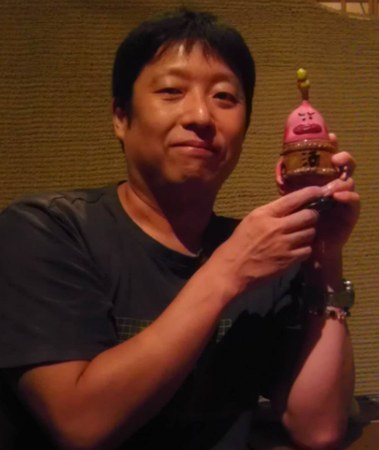

所属
パナソニック エレクトリックワークス株式会社
役職
ソフトウェア品質アーキテクト
経歴
設計者～テスト技術者を経て、SEPG・PSIRT・PMO・OSPO・DX推進など多岐に活動中
最近
本を執筆したり、OSSを公開したり…

築山 史郎
tsucky / ソフトウェア品質アーキテクト
SLIDE 1 / Cover
インターン選考・現場理解・勝ち筋を中心に
SLIDE 2 / Profile

SLIDE 3 / Key Message
SLIDE 4 / Section
高齢化・キャリア採用・インターン経由採用へ
SLIDE 5 / Stacked
SLIDE 6 / Two Column
SLIDE 7 / Numbered List
約100名の部署で3割が転職組（キャリア採用）に。
若手不足の反動で、新卒採用の枠も広がっている。
新卒のほとんどがインターンシップを経て採用される流れに。
SLIDE 8 / Section
マッチング・2週間の就業・三者評価
SLIDE 9 / Icon List
新卒定着率が大幅に向上した。
人事任せの採用ではなく、現場の意見が採用に反映される。
学生は実際の職場の雰囲気を確認したうえで応募してくれる。
SLIDE 10 / Four Step Flow
各部署が求人票のような紹介資料を提示。面白そうな技術・お題を準備。
学生が第10希望までチェック。受入現場も学生の技術を第10希望まで確認。
双方の希望が合えば、インターン受け入れが決定する。
実際に2週間一緒に働く。開始後に本人の希望と技術力で課題を調整。
SLIDE 11 / Timeline Cards
SLIDE 12 / Segment List
SLIDE 13 / Section
好奇心・元気・変化を楽しむ姿勢を伝えよう
SLIDE 14 / Numbered List
スゴい研究やってるぜアピールは逆効果。難しく書いても説明させられる。如何に自分の言葉で分かりやすく説明できるかを見ている。
技術の基礎的な素養は見る。資格試験は良い指標になる。
趣味・サークル・バイト経験などでの行動エピソードなどもアピールポイント。
SLIDE 15 / Three Cards
SLIDE 16 / Two Column
SLIDE 17 / Key Message
SLIDE 18 / Summary
技術の完成度より、好奇心・元気・変化を楽しむ姿勢を見ている。
「これしかやらない」より「何でもやってみる」。可能性は自分で狭めない。
大きな会社ほど社内で道は広がる。変化を楽しんで飛び込もう。
SLIDE 19 / Closing